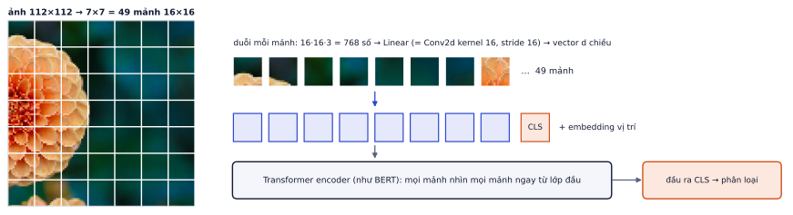
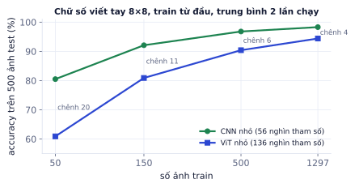
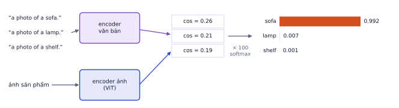

Bài 1
Đếm patch
tính tayẢnh 224×224, patch 16, có thêm token [CLS].
Lời giải
14 × 14 = 196 mảnh, cộng CLS là 197. Mỗi mảnh 768 số chiếu sang 768 chiều: 768·768 + 768 = 590.592.
Transformer không chỉ dành cho chữ. Vision Transformer (ViT) cắt ảnh thành các mảnh và xử lý chúng như token. CLIP ghép một ViT với một Transformer văn bản để hiểu ảnh qua ngôn ngữ, cho phép phân loại ảnh vào những lớp chưa từng được train. Đây là nền móng của mọi model đa phương thức hiện nay, kể cả text encoder trong Stable Diffusion bạn đã dùng ở dự án Diffusion. Bài này có thí nghiệm thật so ViT với CNN khi ít dữ liệu, và hướng dẫn chọn giữa zero-shot, linear probe, fine-tune.
Gần như mọi hệ thống thị giác hiện đại dùng một encoder ảnh kiểu ViT: encoder ảnh của CLIP, của các model đa phương thức (P7.2), của các model robot Vision-Language-Action (P7.3). Với dự án thực tế (phân loại ảnh sản phẩm, tìm ảnh bằng câu mô tả), CLIP thường cho kết quả tốt mà không cần ảnh nhãn nào: đó là cách nhanh nhất để giao một bản demo cho khách.
ViT (Dosovitskiy và cộng sự, 2020) biến ảnh thành chuỗi token như câu văn:
Conv2d có kernel và stride bằng kích thước mảnh.
CLIP ViT-L/14 (encoder ảnh mà nhiều VLM dùng, P7.2) ở độ phân giải 224:
import torch, torch.nn as nn
class ViT(nn.Module):
def __init__(self, p=2, d=64, depth=4, heads=4, img=8, n_cls=10):
super().__init__()
self.patch = nn.Conv2d(1, d, p, stride=p) # patch embedding
n = (img // p) ** 2
self.cls = nn.Parameter(torch.zeros(1, 1, d))
self.pos = nn.Parameter(torch.randn(1, n + 1, d) * .02) # embedding vị trí
layer = nn.TransformerEncoderLayer(d, heads, 2 * d, dropout=0.1, batch_first=True, norm_first=True)
self.enc = nn.TransformerEncoder(layer, depth)
self.head = nn.Sequential(nn.LayerNorm(d), nn.Linear(d, n_cls))
def forward(self, x):
t = self.patch(x).flatten(2).transpose(1, 2) # (B, n, d)
t = torch.cat([self.cls.expand(len(t), -1, -1), t], 1) + self.pos
return self.head(self.enc(t)[:, 0]) # lấy đầu ra của CLS
vit = ViT()
x = torch.randn(5, 1, 8, 8) # 5 ảnh xám 8×8
print(vit.patch(x).flatten(2).transpose(1, 2).shape) # 16 mảnh 2×2, mỗi mảnh 64 chiều
print(vit(x).shape, sum(p.numel() for p in vit.parameters()), "tham số")
torch.Size([5, 16, 64]) torch.Size([5, 10]) 136138 tham số
(Đây là ViT nhỏ dùng trong thí nghiệm ở phần sau, ảnh xám 8×8, mảnh 2×2.)
Trong mỗi lớp self-attention, mọi mảnh nhìn được mọi mảnh khác. Mảnh góc trên trái liên hệ được với mảnh góc dưới phải ngay từ lớp đầu. CNN thì khác: kernel 3×3 chỉ nhìn hàng xóm, phải xếp nhiều lớp và giảm kích thước mới "nhìn" rộng ra (P2.1).
| CNN | ViT | |
|---|---|---|
| Giả định có sẵn (inductive bias) | cục bộ, dùng chung trọng số theo vị trí | gần như không có |
| Dữ liệu ít | tốt hơn | kém hơn, cần pretrain |
| Dữ liệu rất lớn | bão hòa sớm hơn | tiếp tục cải thiện |
| Chi phí theo độ phân giải | tuyến tính theo số pixel | attention tăng theo bình phương số mảnh |
"Giả định có sẵn" là kiến thức mà kiến trúc mang sẵn trước khi thấy dữ liệu. CNN "biết sẵn" rằng pixel gần nhau liên quan, và một cái tai mèo ở góc trái cũng là tai mèo ở góc phải. ViT phải tự học điều đó từ dữ liệu: cần nhiều dữ liệu hơn, nhưng không bị giới hạn bởi giả định nếu dữ liệu đủ lớn.
Train từ đầu một ViT nhỏ (mảnh 2×2, 4 lớp, đúng đoạn code ở trên) và một CNN nhỏ trên bộ chữ số viết tay 8×8 của scikit-learn, với số ảnh train khác nhau, cùng số bước train, đo trên 500 ảnh test:

CNN thắng ở mọi mức trong thí nghiệm nhỏ này, nhưng khoảng cách giảm từ gần 20 điểm xuống khoảng 4 điểm khi dữ liệu tăng 26 lần. Ở quy mô hàng chục hay hàng trăm triệu ảnh, ViT vượt CNN: đó là kết quả của bài báo ViT gốc.
Thực tế: luôn dùng ViT đã pretrain (trên ImageNet-21k, trên cặp ảnh–chữ như CLIP, hoặc tự giám sát như DINOv2), không train ViT từ đầu trên tập nhỏ.
Đổi độ phân giải mà quên embedding vị trí. ViT pretrain ở 224 có 196 embedding vị trí. Đưa ảnh 448 vào thì có 784 mảnh, không khớp. Thư viện thường nội suy embedding vị trí tự động (interpolate_pos_encoding=True trong transformers), nhưng chất lượng giảm nếu chênh lệch lớn, và attention tăng theo bình phương số mảnh. Dùng đúng độ phân giải model được train, hoặc fine-tune lại ở độ phân giải mới.
CLIP (Radford và cộng sự, 2021) train hai encoder cùng lúc trên khoảng 400 triệu cặp (ảnh, chú thích) từ internet:
Trong mỗi batch N cặp, tính ma trận N × N cosine giữa mọi ảnh và mọi chú thích; loss là cross-entropy đối xứng kéo đường chéo (cặp đúng) lên cao, phần còn lại xuống thấp (chi tiết và ví dụ số ở P5.3). Kết quả là một không gian chung cho ảnh và chữ: ảnh sofa nằm gần câu "a photo of a sofa".
Vì học từ chú thích tự nhiên chứ không từ 1000 nhãn cố định, CLIP biết hàng chục nghìn khái niệm: chất liệu, phong cách, thương hiệu, hành động.
Không cần train gì thêm:

Cosine với ba câu lớp: sofa 0.26, lamp 0.21, shelf 0.19.
Xác suất cao không có nghĩa là chắc chắn đúng: nếu ảnh là một cái ghế mà danh sách lớp không có "ghế", CLIP vẫn chọn lớp gần nhất với độ tự tin cao. Luôn cân nhắc thêm lớp "khác".
Cách viết câu ảnh hưởng đáng kể tới kết quả:
| Cách | Làm gì | Cần dữ liệu | Khi nào |
|---|---|---|---|
| Zero-shot | không train | 0 ảnh nhãn | lớp phổ biến, cần demo nhanh |
| Linear probe | đóng băng encoder, train một lớp Linear (hoặc logistic regression) trên embedding | vài chục ảnh mỗi lớp | hầu hết bài toán thực tế |
| Fine-tune | mở khóa encoder, lr nhỏ (1e-5) | hàng nghìn ảnh | miền rất khác ảnh internet (y tế, vệ tinh, hiển vi) |
import numpy as np
from sklearn.linear_model import LogisticRegression
# emb_train, emb_test: embedding ảnh từ encoder CLIP đã đóng băng, chuẩn hóa độ dài 1.
# Chạy thử ở đây: thay CLIP bằng một "encoder đóng băng" đơn giản (PCA) trên chữ số viết tay
from sklearn.datasets import load_digits
from sklearn.decomposition import PCA
from sklearn.model_selection import train_test_split
X, y = load_digits(return_X_y=True)
X_tr, X_te, y_train, y_test = train_test_split(X, y, test_size=0.3, random_state=0)
enc = PCA(32).fit(X_tr)
norm = lambda E: E / np.linalg.norm(E, axis=1, keepdims=True)
emb_train, emb_test = norm(enc.transform(X_tr)), norm(enc.transform(X_te))
clf = LogisticRegression(C=1.0, max_iter=2000).fit(emb_train, y_train)
print("accuracy:", clf.score(emb_test, y_test))
accuracy: 0.9407407407407408
Linear probe rẻ tới mức chạy trên CPU trong vài giây: trích embedding một lần (bước tốn nhất), sau đó thử bao nhiêu cấu hình cũng được.
Fine-tune CLIP với learning rate thường (1e-3, 1e-4). Encoder pretrain bị phá nhanh chóng, accuracy có khi thấp hơn linear probe, và mất hết khả năng zero-shot. Dùng lr 1e-5 hoặc nhỏ hơn, warmup, vài epoch; hoặc dùng LoRA (P5.5) trên encoder ảnh.
Ghi nhớ: với một bài toán ảnh mới, thử theo thứ tự zero-shot CLIP → linear probe → fine-tune. Thường linear probe đã đủ tốt mà rẻ nhất.
CLIP ViT-L/14 ở 224×224.
| Chủ đề | Ý chính |
|---|---|
| ViT | cắt ảnh thành mảnh → token → Transformer encoder; [CLS] đại diện ảnh |
| ViT vs CNN | CNN thắng khi ít dữ liệu; ViT cần pretrain, mạnh khi dữ liệu lớn |
| CLIP | học tương phản trên cặp ảnh–chú thích; không gian chung ảnh và chữ |
| Zero-shot | câu cho mỗi lớp, cosine × 100, softmax; prompt ensembling |
| Thứ tự thử | zero-shot → linear probe → fine-tune (lr nhỏ) |
| Thuật ngữ | Nghĩa |
|---|---|
| ViT | Vision Transformer |
| patch / patch embedding | mảnh ảnh / phép chiếu mảnh thành vector |
| [CLS] token | token đại diện cho cả đầu vào |
| positional embedding | embedding vị trí |
| inductive bias | giả định có sẵn trong kiến trúc |
| zero-shot | dùng cho lớp chưa từng train |
| prompt ensembling | trung bình embedding nhiều mẫu câu |
| linear probe | train một lớp tuyến tính trên đặc trưng đóng băng |
| DINOv2 | ViT tự giám sát của Meta, đặc trưng ảnh tốt |
Ảnh 224×224, patch 16, có thêm token [CLS].
14 × 14 = 196 mảnh, cộng CLS là 197. Mỗi mảnh 768 số chiếu sang 768 chiều: 768·768 + 768 = 590.592.
Đổi ảnh từ 224 lên 448, patch giữ 16.
28 × 28 = 784 mảnh, gấp 4. Attention tăng theo bình phương: 16 lần. Đó là lý do model đa phương thức hay cắt ảnh lớn thành nhiều ô hoặc gộp bớt token.
Cosine giữa ảnh và ba câu lớp: ghế 0.28, bàn 0.31, đèn 0.22. Nhiệt độ 100.
Logits [28, 31, 22]. Trừ max: [−3, 0, −9]. e⁻³ ≈ 0.0498, e⁻⁹ ≈ 0.0001. p(bàn) = 1/1.0499 ≈ 0.952, p(ghế) ≈ 0.047. Chênh 0.03 về cosine thành chênh rất lớn về xác suất vì nhân 100.
Chọn zero-shot, linear probe hay fine-tune, giải thích:
Viết hàm phân loại zero-shot một ảnh với danh sách lớp, dùng prompt ensembling 3 mẫu câu.
# Cần mạng: tải CLIP từ Hugging Face và ảnh của bạn, chạy trên Colab
import torch
from PIL import Image
from transformers import CLIPModel, CLIPProcessor
model = CLIPModel.from_pretrained("openai/clip-vit-base-patch16").eval()
proc = CLIPProcessor.from_pretrained("openai/clip-vit-base-patch16")
TEMPLATES = ["a photo of a {}.", "a product photo of a {}.", "a close-up photo of a {}."]
@torch.no_grad()
def class_embeddings(classes):
out = []
for c in classes:
t = proc(text=[tpl.format(c) for tpl in TEMPLATES], return_tensors="pt", padding=True)
e = model.get_text_features(**t)
e = e / e.norm(dim=-1, keepdim=True)
out.append(e.mean(0) / e.mean(0).norm())
return torch.stack(out)
@torch.no_grad()
def zero_shot(image_path, classes):
img = model.get_image_features(**proc(images=Image.open(image_path).convert("RGB"), return_tensors="pt"))
img = img / img.norm(dim=-1, keepdim=True)
probs = (100 * img @ class_embeddings(classes).T).softmax(-1)[0]
return dict(zip(classes, probs.tolist()))
Dùng bộ ảnh sản phẩm ở P2.3 (hoặc một bộ ảnh tương tự 5–10 lớp).
Các bước
LogisticRegression với 5, 20, 50 ảnh mỗi lớp. Vẽ accuracy theo số ảnh.Xong khi